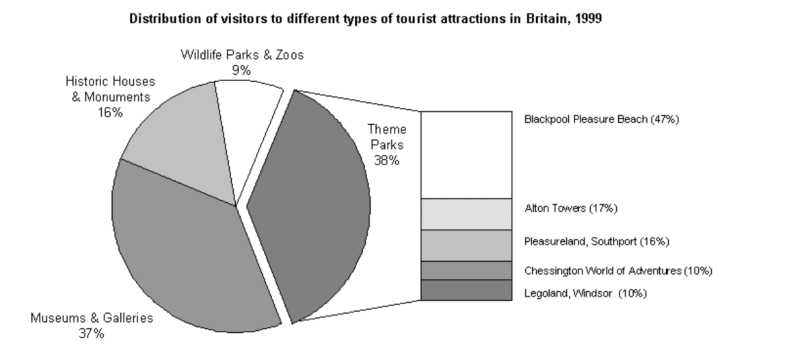

You should spend about 20 minutes on this task.
The chart below shows the results of a survey of people who visited four types of tourist attraction in Britain in the year 1999.
Summarise the information by selecting and reporting the main features and make comparisons where relevant.
Write at least 150 words.

The pie chart compares figures for visitors to four categories of tourist attraction and to five different theme parks in Britain in 1999.
It is clear that theme parks and museums / galleries were the two most popular types of tourist attraction in that year. Blackpool Pleasure Beach received by far the highest proportion of visitors in the theme park sector.
Looking at the information in more detail, we can see that 38% of the surveyed visitors went to a theme park, and 37% of them went to a museum or gallery. By contrast, historic houses and monuments were visited by only 16% of the sample, while wildlife parks and zoos were the least popular of the four types of tourist attraction, with only 9% of visitors. In the theme park sector, almost half of the people surveyed (47%) had been to Blackpool Pleasure Beach. Alton Towers was the second most popular amusement park, with 17% of the sample, followed by Pleasureland in Southport, with 16%. Finally, Chessington World of Adventures and Legoland Windsor had each welcomed 10% of the surveyed visitors.
(181 words, band 9)Write about the following topic.
Information technology is changing many aspects of our lives and now dominates our home, leisure and work activities.
To what extent do the benefits of information technology outweigh the disadvantages?
Give reasons for your answer and include any relevant examples from your own knowledge or experience.
information technology has become an integral part of human life, and we are becoming increasingly dependent on it. But while it enhances certain aspects of our lives, i also think it may be having a detrimental effect on others.
One of the biggest drawbacks of information technology is that it can be incredibly time-consuming. People who work in international business have to read hundreds of emails every day and children can spend hours charring online Some people would argue that this time could be better spent.
A related criticism is that it leads to unhealthy lifestyles- Rather than going out and taking regular exercise, for example, some people spend a lot of time sitting at their computers or with their smart phones. »n the long term, this lack of activity does not do our bodies any good.
Despite these drawbacks, we cannot deny that technology has made many aspects of life more pleasurable. We all have instant access to entertainment and social connections are just a click away. Like many people use a networking site, which apparently has more than 600 million active users. This type of statistic illustrates just how popular this website is.
There are also huge benefits to using technology for study and work. The Internet is an invaluable resource for students of all ages, provided that it is used sensibly. Also, some areas of work have moved forward in leaps and bounds due to the huge amount of data that computers can store.
Clearly, there are some negative aspects to technology.
Having said that. it is the way we use it that causes these- if it is used sensibly and people take regular breaks from their computers, there are only benefits that remain.